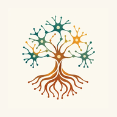

Tu recorrido0 de 83 juegos
Hola, explorador
¿Qué quieres descubrir hoy?
Queñal te acompaña con juegos breves, voz amable y descansos cuando los necesites.
 ★❧
★❧Constancia amable1 día de exploración
Universo RAÍCES
Elige una aventura
30 aventuras
›
Mente en RAÍCES
Atención, memoria, comprensión y razonamiento.
17 familias
›
Explora y encuentra
Sombras, diferencias, patrones, rutas y parejas.
19 circuitos
›
Activa cuerpo y mente
Manos, coordinación, ritmo, matrices y códigos.
17 rutas
›
Sonidos y palabras
Fonemas, sílabas, frases, lectura y comprensión.
Calma y acompañamiento
Elige cómo quieres sentirte
Usa un volumen cómodo. Puedes detener cualquier pista cuando quieras. Estas experiencias acompañan; no reemplazan atención profesional.
Dormir
Noche tranquila
Sonido continuo para bajar el ritmo.
Despertar
Inicio suave
Una pista luminosa para comenzar.
Concentración
Foco amable
Acompañamiento sonoro durante una tarea.
Relajar
Pausa con gong
Escucha, nota y decide cómo continuar.
Meditación guiada
Volver al presente
Una guía lenta para acompañar la respiración.
Taller de color
Nuevas aventuras de Queñal

Llévalo contigo
Instala RAÍCES en tu pantalla
Accede como una app desde Android, tablet o celular y comparte el enlace por redes.